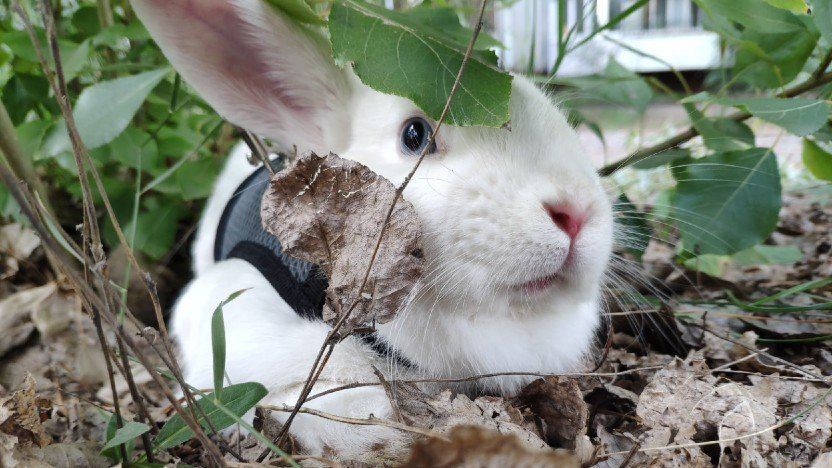

Всем привет!
Расскажу о своем кролике.
У меня живет кролик. Его зовут Бим
Ему скоро будет 3 года
У него своеобразный кроличий характер.


Он любит
- Попрошайничать
- Свежую траву
- Следить за всем подряд
Но не любит
- Когда к нему пристают
- Стричь когти
- Картошку
О кроликах